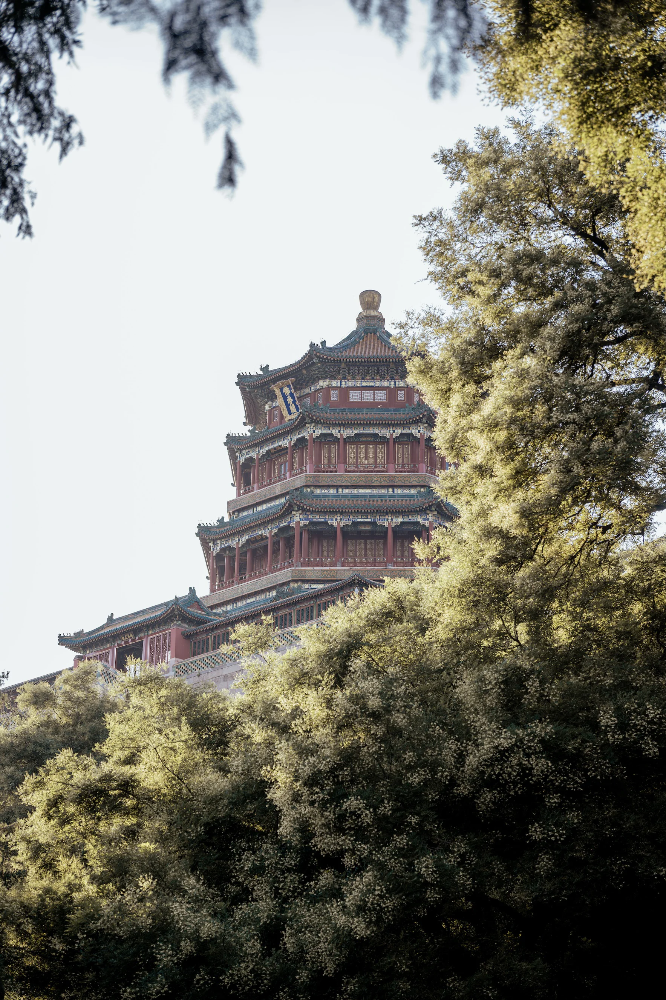
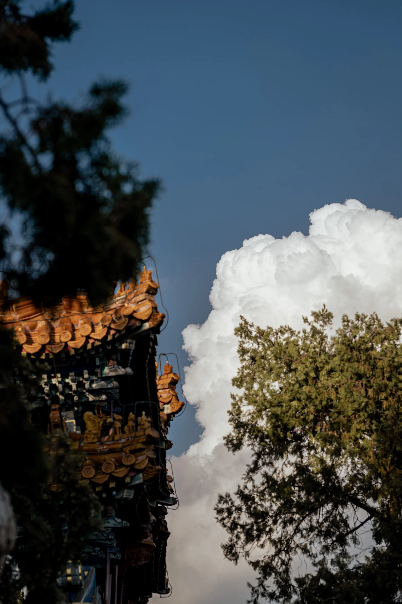
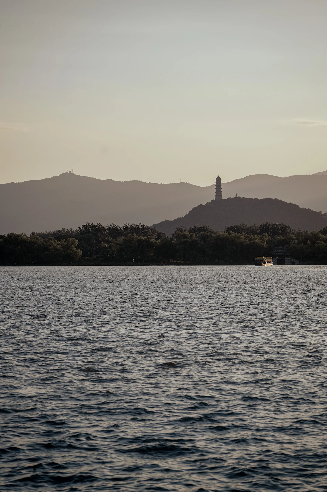
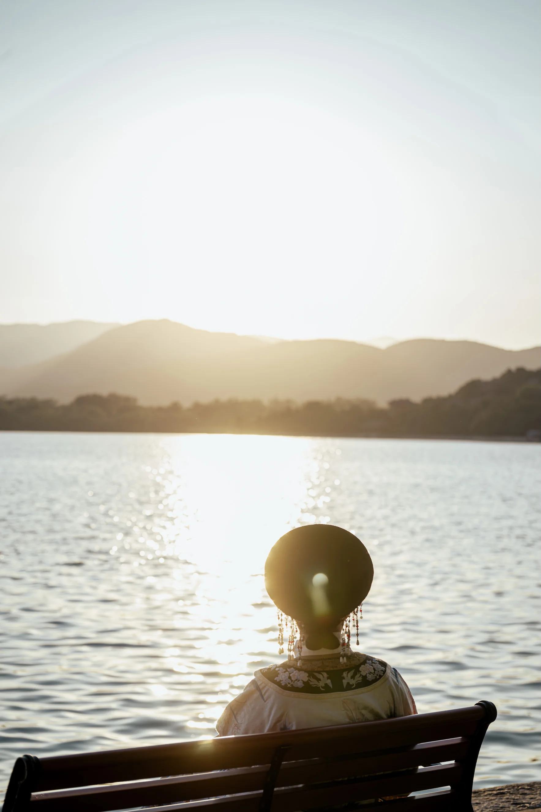
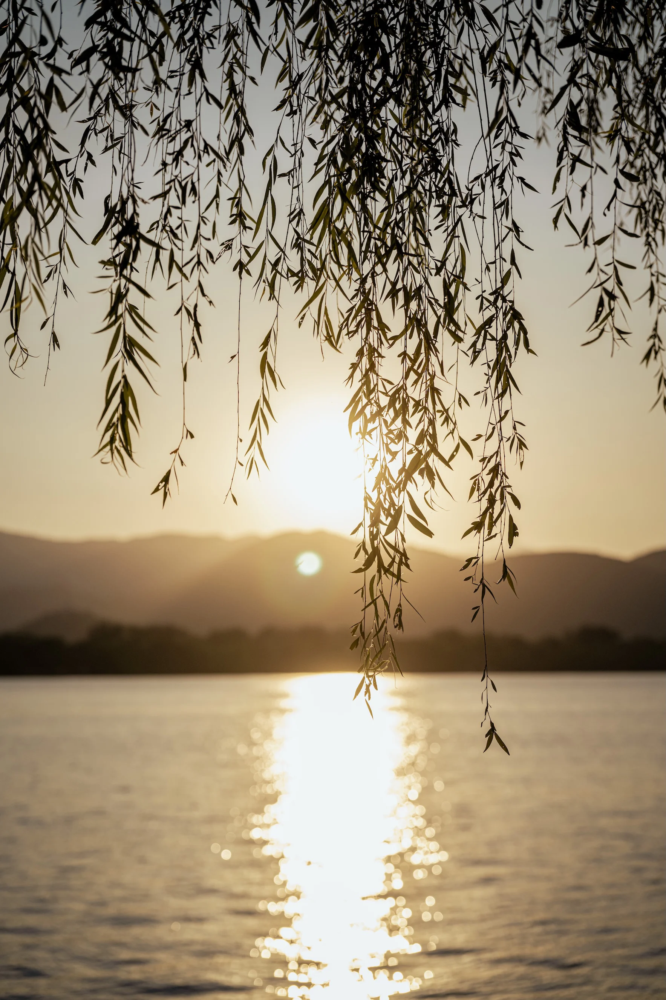

Yiheyuan / Beijing
Yiheyuan
A Beijing edit from the Summer Palace: water, stone, garden structure, and the slower pace of an old imperial landscape inside a modern city.

Tower of Buddhist Incense
01The Tower of Buddhist Incense (Foxiangge) is the majestic centerpiece of the Summer Palace, a three-story octagonal pavilion perched atop Longevity Hill that serves as a definitive symbol of classical Chinese imperial architecture.

Tower of Buddhist Incense
02Tower of Buddhist Incense.

Archway of the Star-Clustered Celestial Pivot
03The Xinggong Yaoshu Paifang (Archway of the Star-Clustered Celestial Pivot) is a magnificent glazed-tile archway in the Summer Palace that serves as the grand entrance to the Tower of Buddhist Incense, symbolizing the cosmic alignment of stars around the North Star to reflect the supreme authority of the Emperor.

Kunming Lake
04Kunming Lake is the sprawling central reservoir of the Summer Palace, a masterpiece of Chinese landscape design modeled after West Lake that offers tranquil vistas and elegant stone bridges set against the backdrop of Longevity Hill.

Silhouette
05
Yiheyuan Sunset
06.
Imperial gardens, quiet city light.
Next, the route turns back toward a denser city rhythm.